Act 1
Available data coverage
Six analytical domains form the backbone of this report. The report follows this exact sequence — each layer depends on the previous one to be correctly interpreted. Sediments only make sense after we understand what the river does, what the cascade controls, and what pressures reach the basin.
01 — River flow
Augusta + USACE Dock
Period
2006–2026
Coverage
21 years
Daily discharge USGS (02197000) aggregated into monthly series. The mandatory starting point — everything that follows is a consequence of this signal.
02 — Cascade operations
Hartwell · Russell · Thurmond
Period
2006–2026
Reservoirs
3 in cascade
Monthly outflow, storage, and power generation per reservoir. Explains how USACE operations modulate the downstream hydrological signal.
03 — Water quality
USACE Dock, Savannah — 5 parameters
Period
2007–2026
Samples
~227 months
Temperature, DO, pH, conductance since 2007. Turbidity since 2013. Analyzed first as independent series, then crossed with hydrology.
04 — NPDES pressures
HUC8 03060101–03060104
Period
2023–2026
Facilities
1,845
EPA ECHO inventory of NPDES permittees across 4 HUC8 sub-watersheds. Includes facility type, violations, and geographic distribution.
05 — Sediment TMDL
Georgia EPD 2010
Type
Static
Sub-watersheds
10
Total maximum daily loads for sediment and bacteria issued by Georgia EPD. Regulatory reference for interpreting observed loads.
06 — Sediment cores
19 sites — Clarks Hill reservoir
Type
Point-in-time
Variables
15 parameters
Fe, Mn, OC, water%, grain size (clay/silt/sand/d₁₀/d₅₀/d₉₀), pH, DO%, conductance — 19 core sites. The geochemical archive of everything that came before.
Reading guide
The numbering 01 through 06 is deliberate. Each domain depends on the previous one to be correctly interpreted. Sediments only make sense after we understand what the river does, what the cascade controls, and what pressures reach the basin.
Act 2
River behavior
Savannah River discharge at Augusta — monthly series 2006–2026
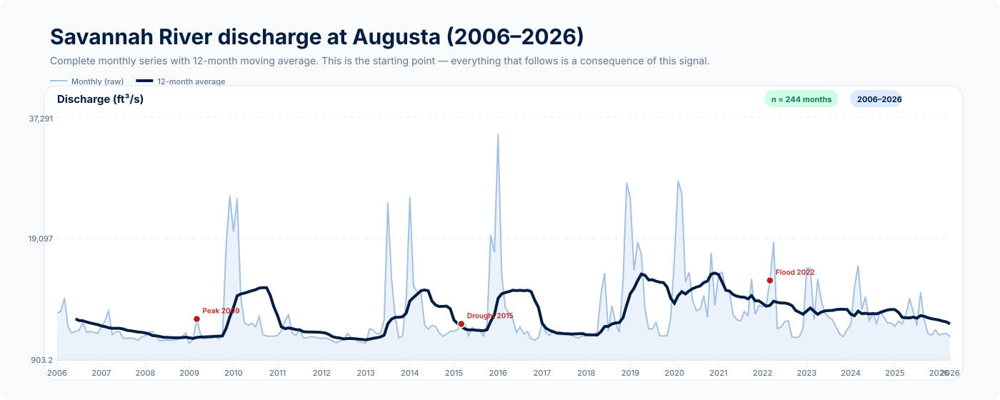
descriptionWhat it shows
Monthly discharge (ft³/s) at USGS gauge 02197000 in Augusta, with a 12-month moving average overlaid. Annotated points mark the 2009 peak, the 2015 drought, and the 2022 flood. The filled area conveys interannual variability; the thick line reveals the medium-term trend.
lightbulbWhy it matters
This is the anchor for everything that follows. The discharge regime at Augusta integrates precipitation, evapotranspiration, and upstream reservoir operations. All water quality parameters and all sediment depositional patterns are, ultimately, a response to this curve.
flagTakeaway
The river has wide interannual amplitude — peak discharge exceeds 3× the drought minimum — with strong seasonality and identifiable extreme events. The moving average reveals that 2015–2016 was the driest period in the record; 2009 and 2022 were the wettest.
Source: USGS NWIS — gauge 02197000, Savannah River at Augusta, GA
Monthly flow climatology — seasonal pattern and variability envelope
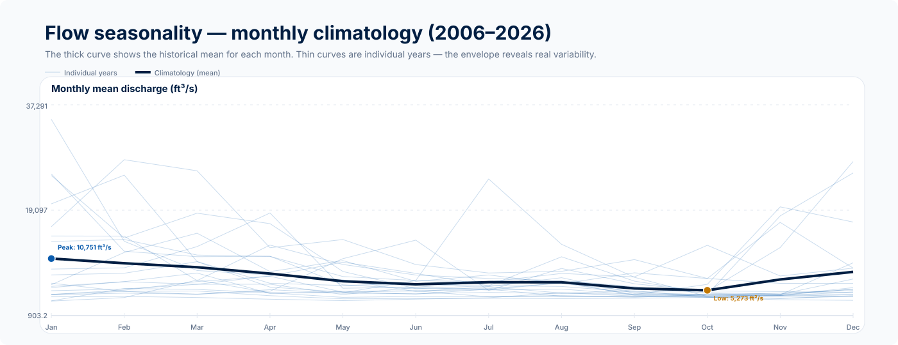
descriptionWhat it shows
The thick curve is the climatological mean for each calendar month across all 21 years (2006–2026). Semi-transparent thin curves are individual years overlaid. The envelope they form reveals real variability between dry and wet years within each month.
lightbulbWhy it matters
The Savannah peaks hydrologically in March and reaches its minimum in September–October. This seasonal rhythm controls when low-DO pulses occur (summer–fall), when turbidity rises (spring), and when reservoir recharge happens. Understanding the seasonal pattern is a prerequisite for interpreting any water quality or sediment data.
flagTakeaway
Peak in March, minimum in September–October. Spread between years is greatest in winter–spring (when floods vary most) and smallest in summer (a more predictable low-flow period). The critical window for DO depletion and Mn mobilization coincides with the summer flow minimum.
Source: USGS NWIS — gauge 02197000, climatology computed over 2006–2026
Reservoir cascade — Hartwell, Russell, and Thurmond monthly outflow
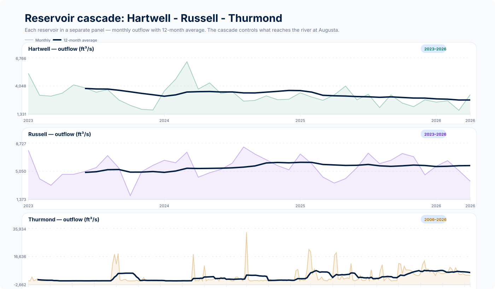
descriptionWhat it shows
Three independent panels — one per reservoir — with monthly outflow and 12-month moving average. Hartwell (green) and Russell (purple) are the headwater reservoirs; Thurmond (orange) is the direct regulator of the Savannah River. Each panel has its own Y-axis to allow shape comparison without compression by magnitude differences.
lightbulbWhy it matters
The Hartwell–Russell–Thurmond cascade is the operational control mechanism of the river. Thurmond has the largest storage capacity in the system (3.82 million ac·ft) and determines the discharge regime reaching Augusta. Low-outflow periods at Thurmond coincide with documented low-DO events at the USACE Dock station.
flagTakeaway
Thurmond dominates the outflow signal reaching the river. Hartwell and Russell show distinct patterns by operating period — Russell, in particular, has periods of negative outflow (pump-back). The joint operation of all three determines how much and when Thurmond releases, directly controlling downstream water quality.
Source: USACE operational data — Hartwell, Russell, Thurmond (2006–2026)
Thurmond to Augusta: reservoir release and downstream river response
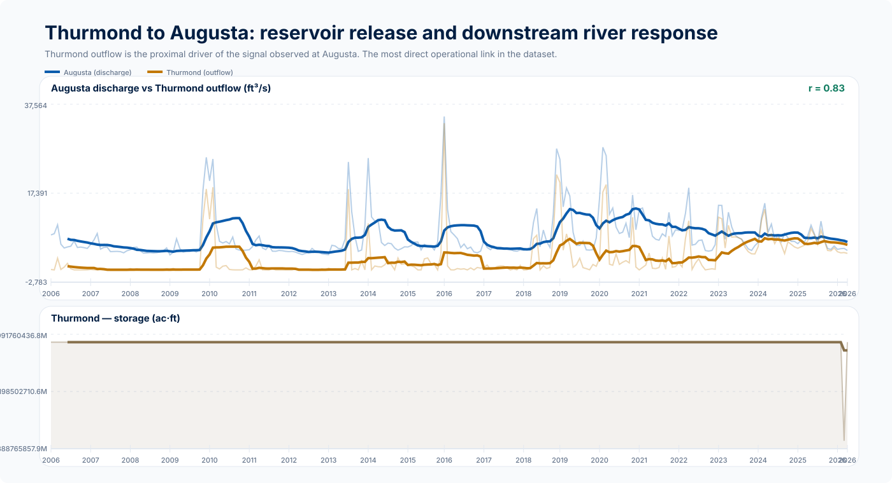
descriptionWhat it shows
Upper panel: Augusta discharge (blue) overlaid with Thurmond outflow (orange) on a shared Y-axis. The Pearson r value in the corner quantifies the coupling. Lower panel: Thurmond storage (ac·ft) — the reservoir level context that governs releases.
lightbulbWhy it matters
This is the most direct mechanical link in the dataset. Thurmond outflow explains a large fraction of the variance in Augusta discharge. Any pattern in downstream water quality parameters (DO, conductance, temperature) is, to a large extent, a function of what Thurmond released — and when.
flagTakeaway
Thurmond outflow and Augusta discharge are strongly covariant. During low-storage periods (2015–2016), outflow drops and the river enters a low-flow regime that promotes thermal stratification, DO depletion, and reductive mobilization of Mn and Fe from bottom sediments — the same Mn that appears enriched in the Clarks Hill sediment cores.
Sources: USACE operational data (Thurmond) · USGS 02197000 (Augusta)
Act 3
Water quality — individual series
Water temperature and dissolved oxygen — USACE Dock (2007–2026)
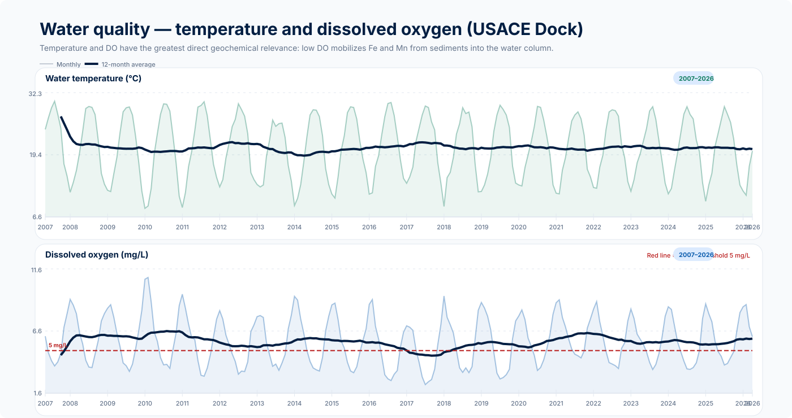
descriptionWhat it shows
Two independent panels: water temperature (°C, green) and dissolved oxygen (mg/L, blue), both at USACE Dock gauge (021989773). The dashed red line in the DO panel marks the critical threshold of 5 mg/L — below this value, suboxic conditions promote reductive mobilization of Fe and Mn from sediments.
lightbulbWhy it matters
DO and temperature are the parameters with the most direct geochemical relevance. In warm summers with low discharge (Thurmond releasing less), DO can drop below 5 mg/L. Under these conditions, Fe²⁺ and Mn²⁺ become soluble and migrate into the water column — the same iron and manganese that, upon re-oxidation and precipitation, form the metal-enriched deposits in the Clarks Hill sediment cores.
flagTakeaway
DO shows clear seasonality: summer minima (July–September) and winter maxima. Depression below 5 mg/L occurs in drought years. Temperature follows the expected seasonal cycle, ranging from ~8°C to ~28°C annually. The mechanistic link temperature → DO → Mn mobilization is the bridge connecting river behavior to the sediment record.
Source: USGS NWIS — gauge 021989773, Savannah River at USACE Dock at Savannah, GA (2007–2026)
Specific conductance and turbidity — USACE Dock (2007–2026)
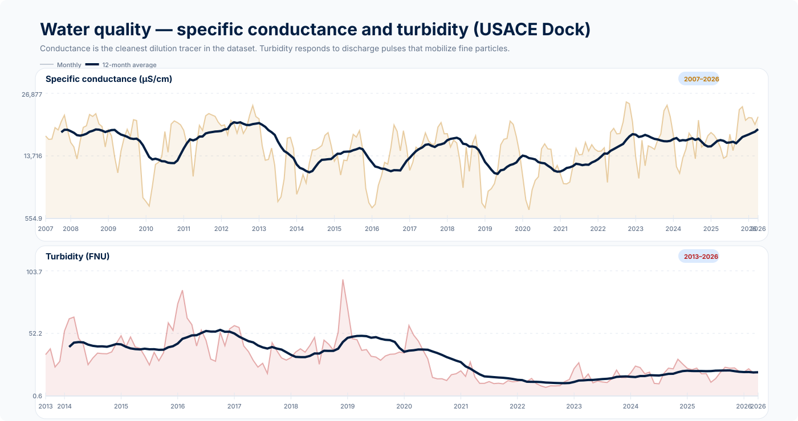
descriptionWhat it shows
Specific conductance (µS/cm, orange) and turbidity (FNU, red) in separate panels. Conductance is a proxy for total ionic load — it drops when the river dilutes during flood events. Turbidity responds to discharge pulses that resuspend fine particles.
lightbulbWhy it matters
Conductance is the cleanest dilution tracer in the dataset (r = −0.79 with Augusta discharge). When the river is high, conductance drops — indicating dissolved ions (including Fe²⁺ and Mn²⁺) are being diluted and transported. Turbidity, in turn, marks episodes of fine particle transport — exactly the material that settles in the low-energy zones of Clarks Hill reservoir.
flagTakeaway
Conductance and discharge are inversely coupled — every flood peak produces a conductance depression. Turbidity has more pronounced episodic spikes than the moving average reveals: extreme turbidity events are the sediment recharge episodes for the reservoir.
Source: USGS NWIS — gauge 021989773 (conductance: 2007–2026; turbidity: 2013–2026)
Act 4
Cross-analysis: water quality × river behavior
Augusta discharge × water quality parameters — 4 scatterplots with Pearson correlation
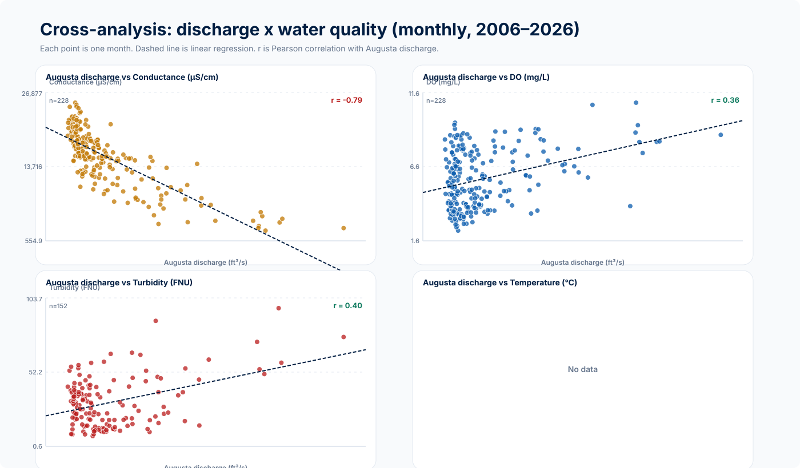
descriptionWhat it shows
Four scatterplots: Augusta discharge (X-axis) versus conductance, DO, turbidity, and temperature (Y-axis, one per panel). Each point is one month. The dashed line is the linear regression. The Pearson r value is shown in the corner of each panel, with color indicating direction (green = positive, red = negative).
lightbulbWhy it matters
This is the central quantitative cross-analysis of the report. The strong negative correlation between discharge and conductance (r = −0.79) confirms that the river dilutes its ionic load during flood events. The DO–discharge relationship is weaker because DO also depends on temperature and organic matter decomposition — factors independent of flow. Each r value here has a direct implication for metal transport and sediment geochemistry.
flagTakeaway
Conductance (r ≈ −0.79) is the parameter most mechanistically coupled to discharge — it is the dilution tracer of the system. DO and temperature show weaker coupling because other factors intervene. Turbidity correlates positively with discharge, confirming that flood pulses are the vectors of fine particle transport into Clarks Hill.
Sources: USGS NWIS — 02197000 (Augusta) × 021989773 (USACE Dock) — ~227 overlapping months
Act 5
Environmental pressures in the basin
Pressure inventory — NPDES, sediment TMDL, bacteria, and DO deficit
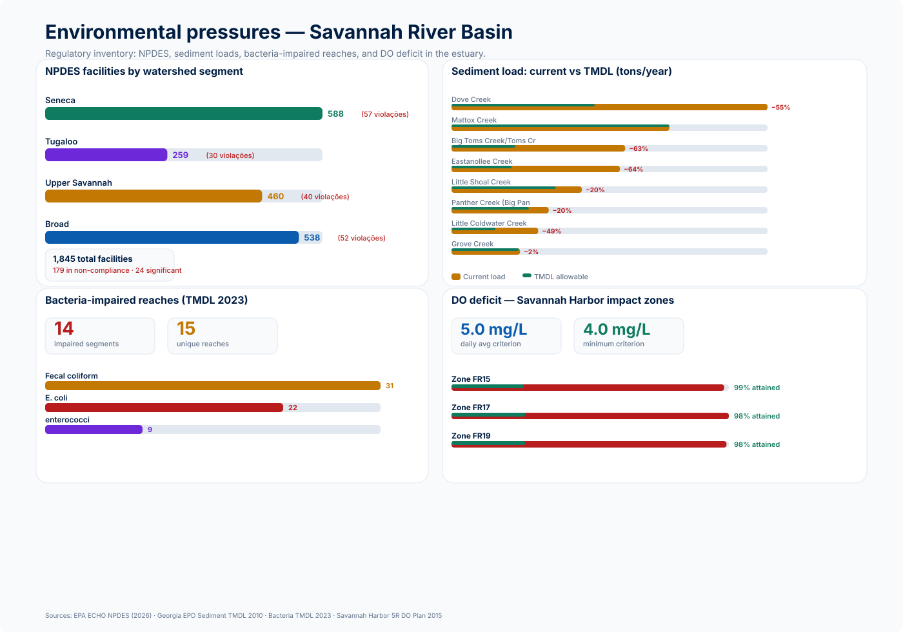
descriptionWhat it shows
Four regulatory panels: (A) 1,845 NPDES facilities by HUC8 sub-watershed with violations highlighted; (B) sediment loads per tributary sub-watershed vs. allowed TMDL (total excess: 1,762 tons/year); (C) bacteria-impaired reaches — 14 segments, 3 indicators; (D) DO deficit zones in Savannah Harbor linked to Thurmond releases.
lightbulbWhy it matters
These four regulatory layers quantify the pressure load that the Clarks Hill sediment archive must eventually reflect. Sub-watersheds such as Dove Creek (1,138 tons/year, −55% reduction required), Big Toms (−63%), and Eastanollee (−64%) are the most likely pathways for delivery of fine, chemically reactive material to the highest-scoring depositional sites. The DO deficit in the estuary closes the chain: Thurmond releases control water quality both at Augusta and in the estuary 400 km downstream.
flagTakeaway
The Savannah basin has 1,845 active NPDES sources and multiple tributaries with sediment loads 50–64% above TMDL limits. The pressure is not diffuse noise — it is concentrated in identifiable sub-watersheds that feed directly into Clarks Hill. The regulatory inventory provides the spatial framework for interpreting Fe and Mn enrichment in the sediment cores.
Sources: EPA ECHO NPDES (2026, HUC8 03060101–03060104) · Georgia EPD Sediment TMDL 2010 · Bacteria TMDL 2023 · Savannah Harbor 5R DO Plan 2015
Act 6
Sediments — the physical archive
Depositional score — ranking of 19 sediment core sites
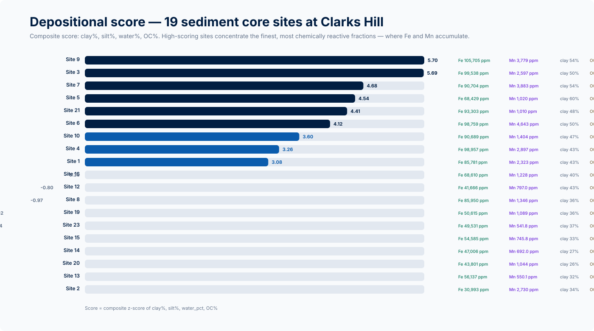
descriptionWhat it shows
Horizontal ranking of the 19 sediment core sites by composite depositional score (z-score of clay%, silt%, water content, and OC%). Sites with high scores concentrate the finest, most chemically reactive fractions. For each site, Fe (ppm), Mn (ppm), clay%, and OC% are shown inline.
lightbulbWhy it matters
The depositional score is the sedimentary consequence of the flow regime documented in Acts 2 and 3. Sites in coves and mid-pool basins where Savannah River current velocity collapses accumulate the finest particles, the most organic carbon, and the most Fe. These are the sites where pressure signals — metals, sorbed organics — accumulate most intensely.
flagTakeaway
Sites 9, 3, and 7 lead the depositional score ranking and also have the highest Fe and Mn values. This is not coincidental: they are low-hydrodynamic-energy sites that preferentially capture the fine material delivered by the tributaries identified in the TMDL. These are the priority sites for future contaminant monitoring.
Data: Clarks Hill sediment cores — 19 sites with grain-size and geochemical analyses
Sediment geochemical relationships — Fe, Mn, OC, clay, and water content (6 pairs)
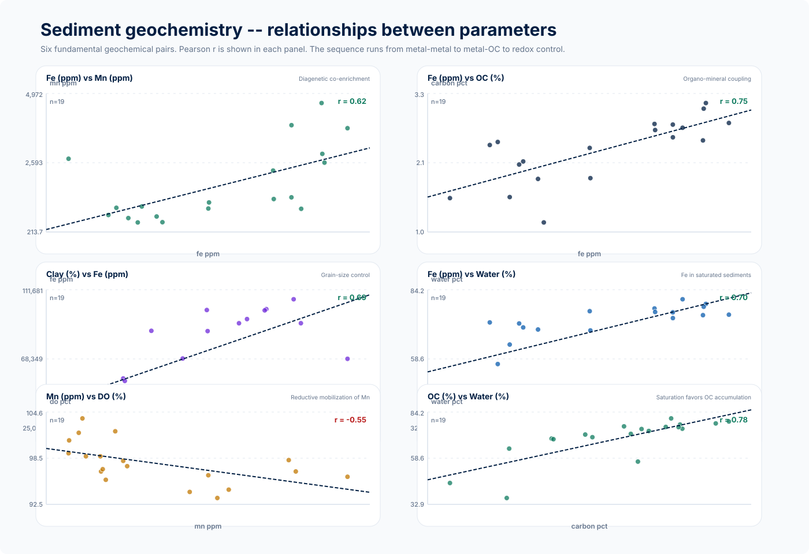
descriptionWhat it shows
Six geochemical pair scatterplots: Fe×Mn (diagenetic co-enrichment), Fe×OC (organo-mineral coupling), clay×Fe (grain-size control), Fe×water (Fe in saturated sediments), Mn×DO (reductive mobilization), OC×water (saturation and organic matter accumulation). Each panel includes Pearson r and n.
lightbulbWhy it matters
These six pairs are the geochemical structure supporting interpretation of the Clarks Hill sediment. Fe×Mn (r ≈ 0.62) confirms diagenetic co-enrichment — Fe and Mn mobilize together under reducing conditions. Fe×OC (r ≈ 0.75) confirms organo-mineral coupling — organic matter is chemically associated with iron phases. Mn×DO (r ≈ −0.55) shows that sites with lower pore-water DO have higher Mn — a direct reductive dissolution signature.
flagTakeaway
The geochemistry of the Clarks Hill cores is internally consistent: Fe and Mn co-enrich, are associated with OC and clay, and Mn is inversely correlated with pore-water DO. The signature is that of fine, organic, suboxically deposited sediment — exactly the environment that the low-flow, low-DO regimes documented in Acts 2 and 3 create every summer.
Data: 19 sediment cores — geochemical analyses of Fe, Mn, OC, and grain size
Spatial gradient of Fe and Mn — latitudinal distribution across 19 sites
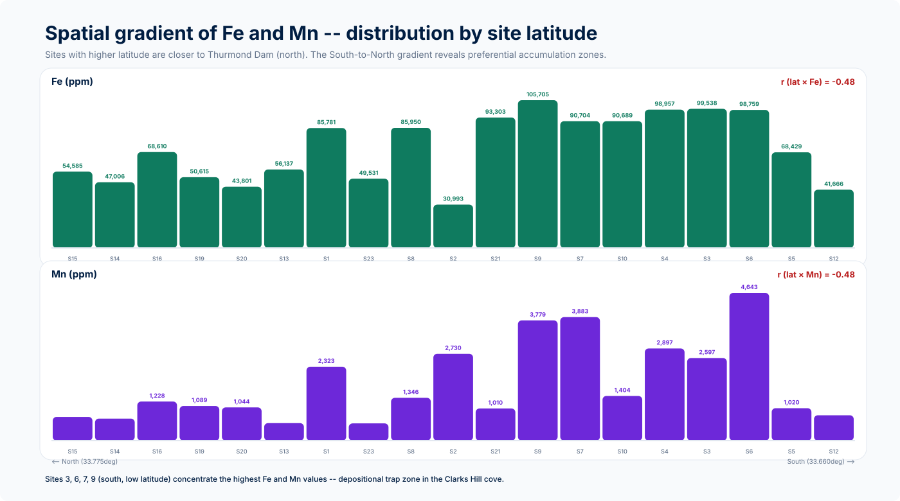
descriptionWhat it shows
Fe (ppm) and Mn (ppm) bars by site, ordered from highest latitude (north, near Thurmond Dam) to lowest (south). The r value indicates whether there is a systematic north–south gradient. Sites with the tallest bars are the metal accumulation hotspots in the Clarks Hill basin.
lightbulbWhy it matters
The spatial gradient reveals which reservoir zones concentrate the most geochemically active material. Sites at the southern end (lower latitude, closer to the Savannah River inlet) tend to have higher Fe and Mn values — they sit in the river-to-reservoir transition zone, where current velocity drops rapidly and fine particles flocculate and settle. This spatial pattern is the final link between fluvial transport and the sediment archive.
flagTakeaway
Sites 3, 6, 7, and 9 (southern end, depositional trap zone) concentrate the highest Fe and Mn values. The spatial signature is clear: fine, metal-enriched material accumulates in the southern coves of the reservoir, fed by tributaries entering along the Savannah River axis. This is the priority target for any future contaminant monitoring in the Clarks Hill basin.
Data: 19 sediment cores — geographic coordinates and Fe and Mn analyses (ppm)